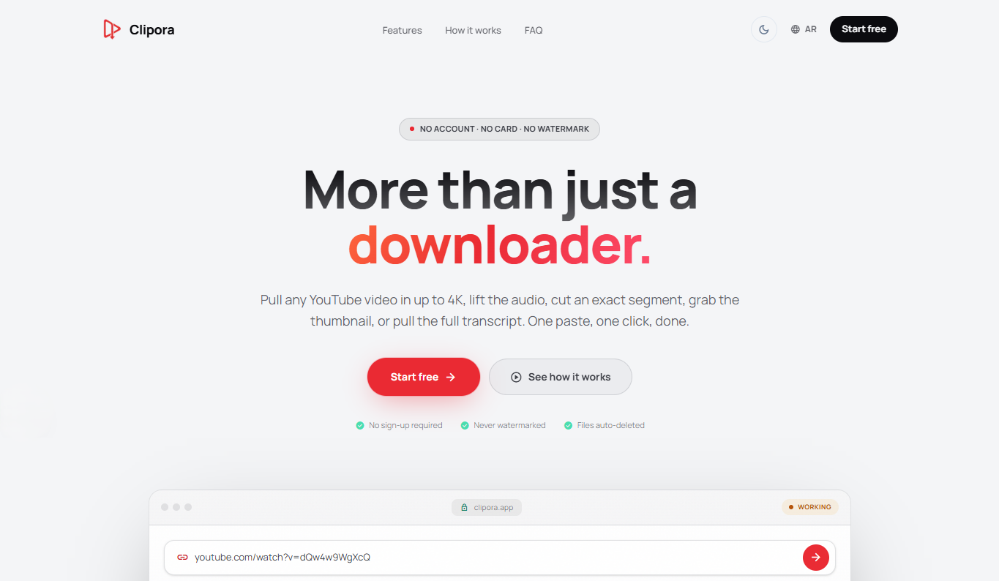
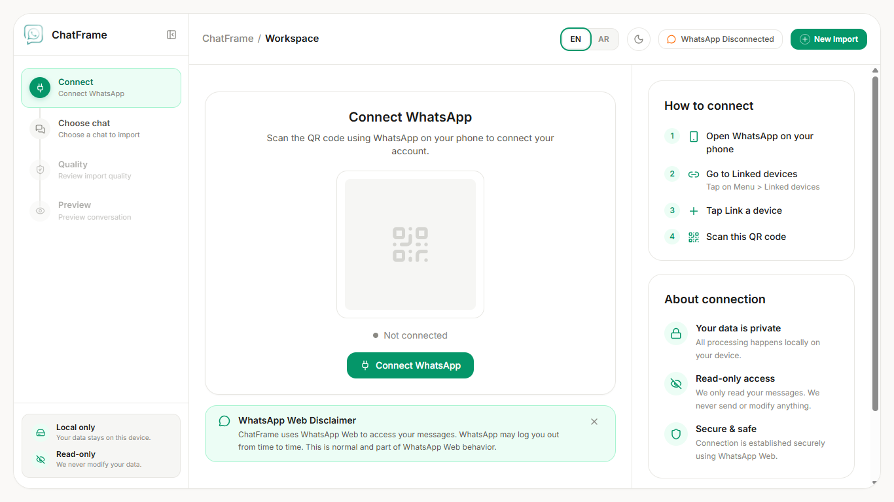

موقع يوضح خدمتك.
أول ما الشخص يزور موقعك، يفهم إيش تقدم، لمن تقدمها، وكيف يتواصل أو يطلب منك بدون ما يحتار.
مواقع تعريفية · صفحات هبوط · متاجر بسيطة
أهلاً، أنا أبوبكر خالد 👋
سواء تحتاج موقع لخدمتك، صفحة تشرح فكرتك، متجر، أو نظام بسيط ينظم الطلبات والمتابعة نحدد اللي تحتاجه فعلًا ونبنيه بشكل واضح ومناسب لشغلك.
من الإمارات، وبشتغل معاك أونلاين.
كيف أساعدك
سواء تحتاج موقع يوضح خدمتك، نظام يرتب المهام، أو مساعد يرد على زوارك — نختار الحل اللي يناسب طريقة شغلك.
أول ما الشخص يزور موقعك، يفهم إيش تقدم، لمن تقدمها، وكيف يتواصل أو يطلب منك بدون ما يحتار.
إذا في خطوات تتكرر كل يوم، نرتبها في مكان واحد أو نربط الأدوات مع بعض عشان تتابع شغلك بشكل أوضح وبمجهود أقل.
Chatbot يعرف معلومات خدمتك، يجاوب على الأسئلة المتكررة، ويوجه الزائر للخطوة المناسبة بدل ما يضيع أو ينتظر رد.
طريقة الشغل
ما أحب أعقد عليك التفاصيل. نبدأ بفهم اللي تحتاجه فعلًا، ثم نحوله لحل واضح ونبنيه خطوة بخطوة، وأنت تكون متابع معايا من البداية للنهاية.
تحكي لي عن شغلك، العميل اللي تستهدفه، وإيش تبغى الموقع أو النظام يساعدك فيه.
نحدد الصفحات أو الخصائص المهمة، نتفق على الاتجاه، وبعدها أبدأ التنفيذ بشكل واضح ومنظم.
نتأكد أن كل شيء يعمل بالشكل المطلوب، تعدل ملاحظاتك، وبعدها يكون المشروع جاهز للنشر والاستخدام.
أستخدم التقنية المناسبة حسب احتياج مشروعك، مو مجرد نفس الأدوات في كل شغل.
من شغلي
مجموعة من المشاريع حوّلت فيها الأفكار إلى حلول واضحة وسهلة الاستخدام.

تطبيق يجمع تنزيل الفيديو، قص مقطع محدد، واستخراج الصوت والنصوص المتاحة في واجهة عربية وإنجليزية، مع متابعة واضحة لكل عملية.

أداة تحفظ محادثة واتساب فردية في أرشيف مرتب يشبه المحادثة الأصلية. تراجعه وتفتحه من المتصفح بدون إنترنت، مع حفظ الملفات على جهازك.
عنّي
مطور برمجيات مقيم في الإمارات، بخلفية متخصصة في الأمن السيبراني وتصميم الأنظمة. أركز على بناء حلول رقمية ليست فقط جميلة بصرياً، بل سريعة، آمنة ومبنية لخدمة أهداف عملك الفعلية.
أستفيد من أحدث تقنيات التطوير والأتمتة لتسليم أنظمة متكاملة تختصر الوقت وتوفر تجربة استخدام سلسة لك ولعملائك.
ناقش فكرتك معيأسئلتك
إجابات صريحة ومباشرة حول التكلفة، طريقة العمل، والتسليم.
دوري يبدأ من هنا. شاركني الفكرة والمشكلة التي تريد حلها، وسأساعدك في ترتيب الأولويات وتحديد المزايا الأساسية لبناء أول نسخة عملية للمشروع دون الدخول في تعقيدات تقنية لست بحاجة لها.
يعتمد على حجم المتطلبات، لكن أغلب مواقع الخدمات والأنظمة الخفيفة تستغرق بين أسبوعين إلى 4 أسابيع. نحدد نطاق العمل والتكلفة الثابتة بوضوح تام قبل أن نبدأ، دون أي تكاليف أو مفاجآت غير متوقعة.
بالتأكيد. أصمم النظام بواجهة إدارة بسيطة وسلسة تمكنك من تعديل النصوص، الصور، والبيانات بسهولة ودون الحاجة لكتابة كود، مع تزويدك بفيديو توضيحي لكيفية إدارة الموقع خطوة بخطوة.
لا ينتهي دوري بمجرد التسليم؛ أقدم فترة دعم فني ومتابعة بعد الإطلاق للتأكد من استقرار كل شيء، مع تسليمك كامل الصلاحيات والملفات الخاصة بمشروعك.
التواصل
شاركني فكرتك أو المشكلة التي تبحث عن حل لها، وسأرد عليك بخطة واضحة وتكلفة تقديرية خلال 24 ساعة.